|
|
| hydroid text index | photo index |
| Phylum Cnidaria > Class Hydrozoa |
| Stinging
hydroid awaiting identification* updated Mar 2020 Where seen? This colony of tiny animals can be common on some offshore Northern shores, forming alarming large colonies. Sometimes also seen on our Southen shores. It grows on coral rubble or hard surfaces. Features: Colonies can be 20-30cm wide. Made up of black thin branches (4-20cm long) with feathery side branches. Some look like clumps of grass with long, sparsely branched or unbranched stems (10-20cm). Others are bushier with stems that have more branches and fern-like structures (1-3cm long). Macrorhynchia philippina has white feathery branches that pack a powerful sting. |
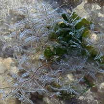 Bushy fern-like stinging hydroids. Tuas, Apr 05 |
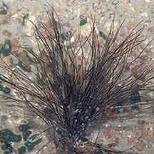 Grass-like pale stinging hydroids. Beting Bronok, Aug 05 |
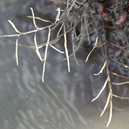 Out of water East Coast Park, May 16 |
|
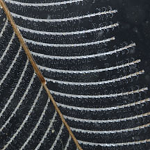 Tiny tentacles. Changi, Aug 12 |
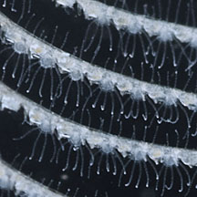 Tiny tentacles. Changi, Aug 12 |
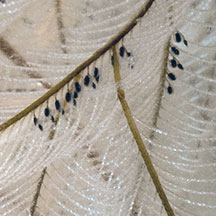 Black bits may be reproductive structures. Beting Bronok, Aug 15 |
| Hydroid friends: Despite their stings, sometimes, tiny animals can be found living among hydroids. These include tiny shrimps and other crustacea and nudibranchs like Lomanotus vermiformis. Squid egg capsules have also been seen laid on these hydroids. |
|
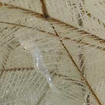 Tiny shrimp. Beting Bronok, Jun 10 |
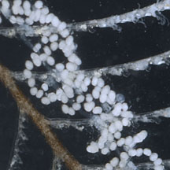 Coils of eggs laid by a slug? Changi, Aug 12 |
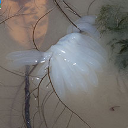 Squid egg capsules. Changi, May 17 |
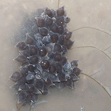 Squid egg capsules. Beting Bronok, Jun 12 |
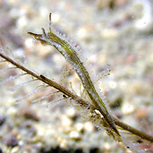 A nudibranch (Lomanotus vermiformis) Beting Bronok, Jun 25 Photo by Jianlin Liu on facebook. |
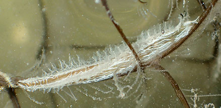 A nudibranch (Lomanotus vermiformis) Pulau Ubin, Jul 24 Photo by Chay Hoon on facebook. |
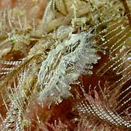 A nudibranch (Lomanotus vermiformis) Changi Carpark 1, May 21 Photo shared by Toh Chay Hoon on facebook. |
*Species are difficult to positively identify without close examination.
On this website, the animals are grouped by external features for convenience of display.
| Stinging hydroids on Singapore shores |
On wildsingapore
flickr
|
| Other sightings on Singapore shores |
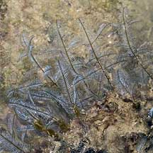 Raffles Lighthouse, Aug 06 |
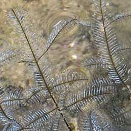 |
|
Links
References
|